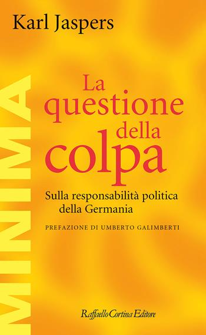
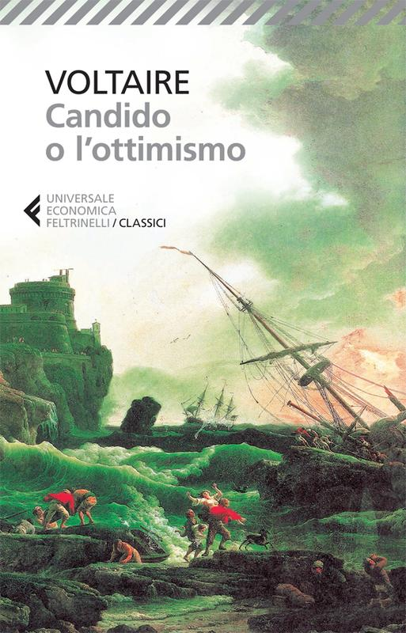

49:51 · 6 OPERE
Il film "Oppenheimer" di Christopher Nolan ed il moderno.
Il filo del discorso
Dr Divago prende il film Oppenheimer come occasione per interrogare il rapporto fra rappresentazione, storia e responsabilità. Dichiara subito di averne interrotto la visione: il suo giudizio riguarda la parte vista e alcune scene richiamate, non un esame completo della pellicola. Una lunga premessa affronta la responsabilità di chi divulga conoscenze che possono essere usate anche contro il confronto razionale; Jaspers e la questione della colpa sostengono la domanda sul contributo individuale alle conseguenze collettive.
Leggi la sintesi completaRiduci la sintesi
Tornando al film, il relatore contesta soprattutto le figure di Einstein e Gödel, il modo di presentare la fisica e il rapporto fra scienziati e progetto Manhattan. Legge quelle scelte come espressioni di una cultura che svaluterebbe il passato per esaltare il presente. La Bhagavadgītā e il problema dell’incendio dell’atmosfera introducono il tema del rischio e della responsabilità scientifica. Nell’ultima parte Améry e un testo dell’autore conducono a una riflessione su comprensione, intuizione e volontà. Il dilemma del carrello e un racconto sul lutto chiudono il discorso sulla scelta e sul valore dell’insegnamento. La scheda distingue la critica estetica e morale dalle verifiche storiche: un dialogo scritto per il cinema non è una testimonianza documentaria, e alcune spiegazioni causali proposte dal relatore non sono dimostrate dalle fonti consultate.
I libri nel discorso

Bibbia
Identificazione probabile
Note sul riferimento
Copertina: San Paolo, 2014 · Nuova Versione dai Testi Antichi · edizione di riferimento
Piove sui giusti e sugli ingiusti, rinvio probabile a Matteo 5,45; versetto non pronunciato.

La questione della colpa
Note sul riferimento
Copertina: Raffaello Cortina
Karl Jaspers, La questione della colpa, titolo e quattro categorie espliciti.

Candido o l’ottimismo
Identificazione probabile
Note sul riferimento
Copertina: Feltrinelli · Universale Economica I Classici · 2013 · traduzione di Stella Gargantini
Immagine autentica dell’opera, controllata visivamente; l’edizione di riferimento non è attribuita al filmato.
Voltaire e Pangloss nel migliore dei mondi possibili: rinvio probabile a Candido, titolo non pronunciato.

Bhagavadgītā
Note sul riferimento
Copertina: Adelphi, gli Adelphi 29, 1991; a cura di Anne-Marie Esnoul, traduzione di Bianca Candian.
Immagine autentica dell’opera, controllata visivamente; l’edizione di riferimento non è attribuita al filmato.
Bhagavadgītā e la frase ricordata da Oppenheimer, opera nominata.

Intellettuale a Auschwitz
Note sul riferimento
Copertina: Bollati Boringhieri · Varianti · 2011 · traduzione di Enrico Ganni
Immagine autentica dell’opera, controllata visivamente; l’edizione di riferimento non è attribuita al filmato.
Jean Améry, At the Mind’s Limits, corrispondente al volume italiano Intellettuale a Auschwitz; autore e titolo inglese espliciti.
Bibbia
Note sul riferimento
Copertina: San Paolo, 2014 · Nuova Versione dai Testi Antichi · edizione di riferimento
Evangeli, domanda su chi sia Gesù e guarigione: più richiami, senza scelta arbitraria di un unico passo.